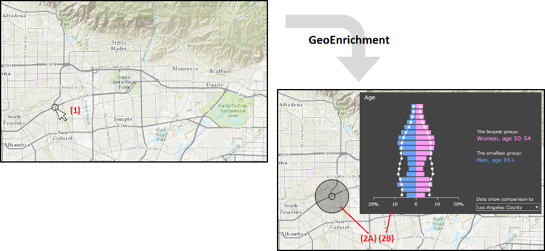
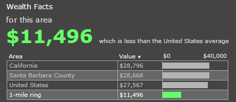
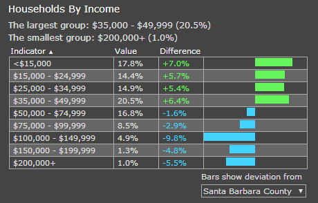
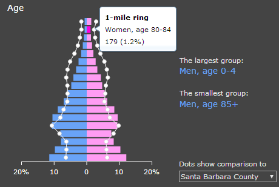
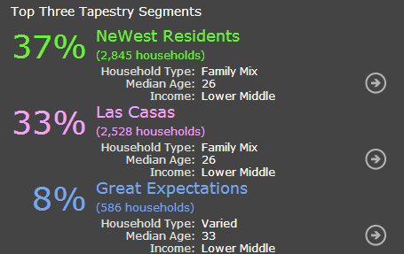
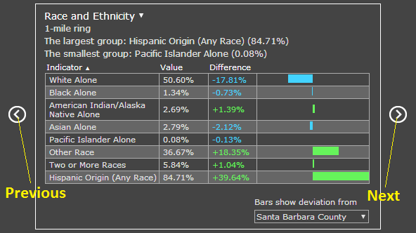
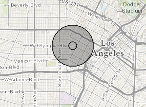
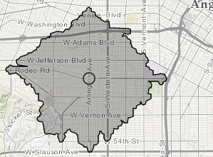
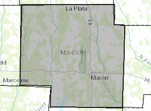
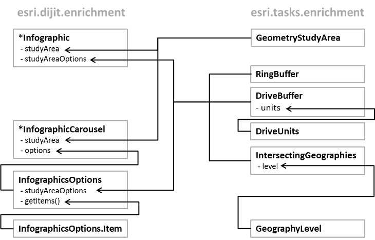

Hide Table of Contents
Hide Table of Contents
 About the API
Getting Started
Working with the API
Graphics and feature layers
Popups and Info Windows
Using the RouteTask
Using the Geoprocessor
Mobile
Recommendations
ArcGIS Server Services
What's New archive
About the API
Getting Started
Working with the API
Graphics and feature layers
Popups and Info Windows
Using the RouteTask
Using the Geoprocessor
Mobile
Recommendations
ArcGIS Server Services
What's New archive
The GeoEnrichment widgets provide access to the ArcGIS GeoEnrichment Service via ArcGIS JavaScript API. Using GeoEnrichment, you can get information about the people, places, and businesses in a specific area or within a certain distance or drive time from a location. After executing a GeoEnrichment task, the widgets return either an Infographic or an InfographicsCarousel, where the information you requested is properly summarized and visualized in tables or/and charts.
The diagram below demonstrates a typical user experience of using an application with GeoEnrichment widgets:
- Click a location on the map (1) to determine your study area and initiate a GeoEnrichment task.
- After GeoEnrichment, the geometry of your study area (2A) and the infographic (2B) are returned.
Features: Infographic and InfographicsCarousel
Infographic provides a graphic layout with the information about your study area. Four types of infographic are available: One Variable, Related Variables, Age Pyramid and Tapestry.
One variable displays the value of one single variable

Related variables displays values of multiple variables

Age pyramid displays an age pyramid based on demographic data

Tapestry displays the Lifestyles-Esri Tapestry Segmentation data.

InfographicsCarousel display a collection of multiple Infographics. Its next and previous buttons allow users to switch between various infographics.
How to Build a GeoEnrichment Application with Infographic
In this section, we provide a step-by-step instruction on building and using GeoEnrichment in your app. Before following this instruction, you need a simple map app ready.
Link your app to a required CSS stylesheet. Add the following link tag to your HTML file. Replace
//js.arcgis.com/3.7with other CDN locations if needed.-
Acquire related modules and construct an Infographic. Add the following module paths to the
requirefunction.["esri/dijit/geoenrichment/Infographic", "esri/tasks/geoenrichment/GeometryStudyArea"]
Start constructing a new infographic. type, variables and studyArea are three required parameters in the constructor. Refer to API reference for all the parameters you may specify. The second argument in the constructor specifies the DOM node where the infographic will be placed.
In this particular app, we want studyArea to be determined when users click on the map, thus it is not specified in the constructor. returnGeometry determines whether the geometry of your study area will be retured. Since we would like to show the study area with the results on map, set it to true.
Listen to map.on("click") to trigger a GeoEnrichment task. We use the clicked location on map to construct a GeometryStudyArea and set it as the study area of the infographic. Finalize building the infographic with the .startup() method.
map.on("click", function(evt){ infographics.set("studyArea", new GeometryStudyArea({ geometry: evt.mapPoint })); infographics.startup(); });You may add a graphic to visualize this clicked location on the map - be sure
"esri/graphic"and"esri/symbols/SimpleMarkerSymbol"are added to therequirefunction.map.graphics.add(new Graphic(evt.mapPoint, new SimpleMarkerSymbol()));
Listen to infographics.on("data-ready") to add the returned geometry to the map. When the GeoEnrichment results are ready, the infographic will automatically fetch the results and update the content. However, since we would like to see the geometry of our study area on the map, we use the provider property in the returned object to get the geometry. Then we create a new Graphic and add it to the map.
In this example, be sure you added
["esri/graphic", "esri/symbols/SimpleFillSymbol"]to therequirefunction.In the HTML
<body>, add a DOM node where the inforgraphic will be placed. The DOM ID must match the ID you specified in step 3.<div id="infographics"></div>
Try running this app. Since GeoEnrichment requires ArcGIS.com credits, you will be asked to enter your log in credentials when the GeoEnrichment is initiated. View this sample to see the complete code of the app this instrcution is based on.
<link rel="stylesheet" href="//js.arcgis.com/3.7/js/esri/dijit/geoenrichment/themes/common/main.css">
var infographics = new Infographic({
type: "AgePyramid",
variables: ["Age.*"],
returnGeometry: true
}, "infographics");
infographics.on("data-ready", function(evt){
map.graphics.add(new Graphic(evt.provider.geometry, new SimpleFillSymbol()));
});
Using InfographicsCarousel
The workflow of building an app with InfographicsCarousel is similar to the instruction above. With the app made according the instruction above, you may follow the instruction below to introduce InfographicsCarousel to your app.
Replace the Infographic constructor with InfographicsCarousel. There is no type or variables parameter in InfographicsCarousel. Only keep returnGeometry. Be sure the module require path
"esri/dijit/geoenrichment/InfographicsCarousel"is included in therequirefunction.var infographics = new InfographicsCarousel({ returnGeometry: true }, "infographics");Now try to run the app. You will see several default infographics in the carousel.
Since we would like to add more customized infographics to the carousel, we acquire another module InfographicsOptions to specify options for InfographicsCarousel. Be sure you have added
"esri/dijit/geoenrichment/InfographicsOptions"to therequirefunction.var options = new InfographicsOptions();
InfographicsOptions has an method getItems(countryID), which returns a
dojo.Deferredobject with an array of items (i.e. infographics) currently in the carousel.options.getItems("US").then(function(items){ ... });In the callback function, we first want to make all existing infographics invisible.
for (var i = 0; i < items.length; i++) { items[i].isVisible = false; };Then create two new items and push them into the
itemsarray. Two arguments in the InfographicsOptions.Item constructor are the equivalent of type and variables in Infographic.var item1 = new InfographicsOptions.Item("OneVar", ["Wealth.PCI_CY"]); var item2 = new InfographicsOptions.Item("AgePyramid", ["Age.*"]); items.push(item1, item2);Finally, set the
optionsobject we created earlier as the options property of the InfographicsCarousel. The complete callback function will be like:options.getItems("US").then(function(items){ for (var i = 0; i < items.length; i++) { items[i].isVisible = false; }; var item1 = new InfographicsOptions.Item("OneVar", ["Wealth.PCI_CY"]); var item2 = new InfographicsOptions.Item("AgePyramid", ["Age.*"]); items.push(item1, item2); infographics.set("options", options); });Try running this app. View this sample to see the complete code of the app this instrcution is based on.
Strategies to Customize and Optimize Your Applications
Study Area Options
By default, the geometry you pass into studyArea determines your study area, but you may opt to customize your study area with studyAreaOptions. You can pass this parameter intoInfographicorInfographicsOptions(forInfographicsCarousel).- RingBuffer: A buffer area based on physical distance.
infographics.studyAreaOptions = new RingBuffer({radii: [ 2 ], units: "esriMiles"}); - DriveBuffer: A buffer area based on driving distance or driving time.
infographics.studyAreaOptions = new DriveBuffer({radii: [ 2 ], units: "esriMiles"}); - IntersectingGeographies: The polygon feature at a specific geography level (such as states, counties, etc) that intersects with your input geometry. This class needs to be used with GeographyLevel
infographics.studyAreaOptions = new IntersectingGeographies({ levels: [new GeographyLevel({ layerID: "US.Counties" })] });- RingBuffer: A buffer area based on physical distance.
When studyAreaOptions is not specified, a RingBuffer with one-mile radius will be used as your study area.
Variables
Numerous variables are available for GeoEnrichment tasks. The availability of each variable varies from place to place. You may use this application to find variables available in your study area.
Country ID and Dataset ID
By default, a GeoEnrichment service automatically determines the country and dataset within which your study area will be enriched. Specifying the country ID and/or dataset ID can eliminate computational cost and potentially improve the performance of your application. The countryID and datasetID parameters can be specified for Infographic and GeographyLevel.
Themes
Currently two themes are available for InfographicsCarousel: common and light.
Structure of GeoEnrichment in ArcGIS JavaScript API
GeoEnrichment classes are placed under the esri.dijit.geoenrichment and esri.tasks.geoenrichment folders. Infographic and InfographicsCarousel provide basic user experience as demonstrated above, while other classes are used to support the constructor options of these two classes. The diagram below illustrates the relationships between the GeoEnrichment classes.
